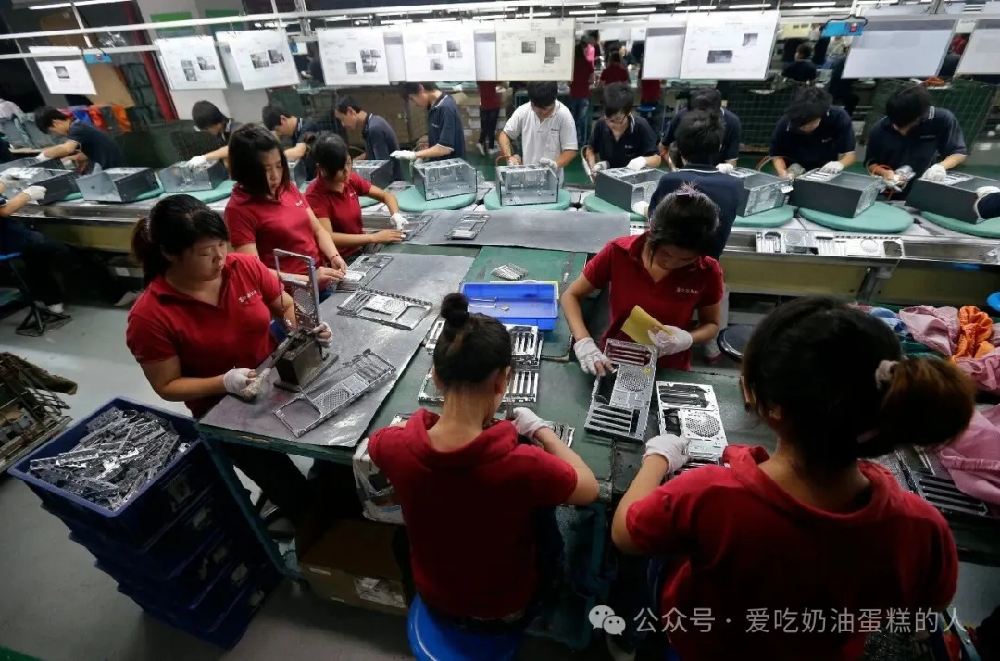
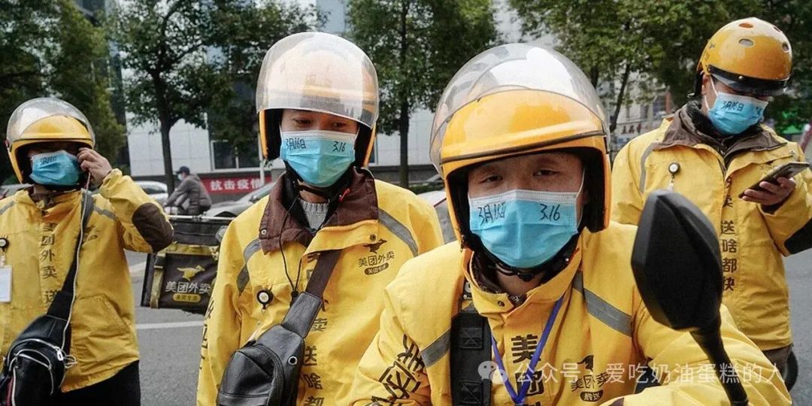
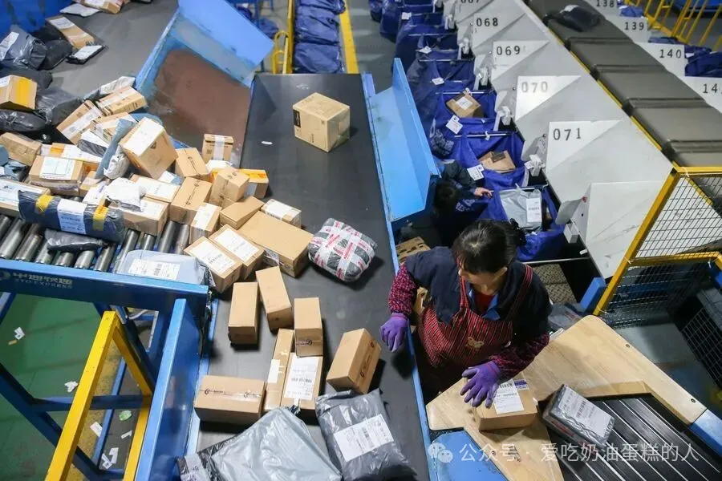
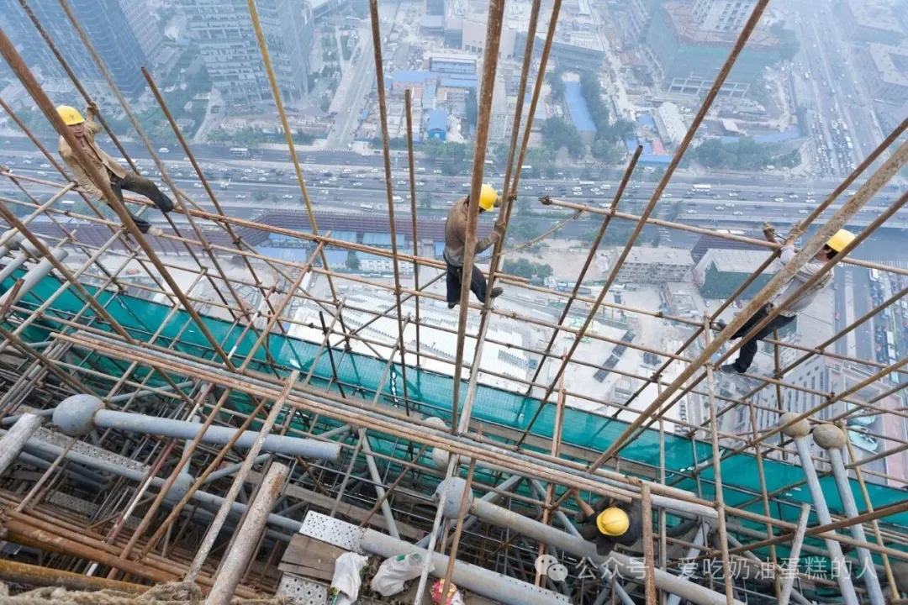

「全文约12000字」
作者：陈慧玲（Jenny Chan）
文献来源：Jenny Chan, 「Informalization of Labor in Contemporary China」（《当代中国的劳动非正规化》） inHandbook of Research on the Global Political Economy of Work （《劳动的全球政治经济学研究手册》），Edward Elgar Publishing，2023，591–601.
译者导读
━━━━ ◆ ━━━━
本文考察改革开放以来中国劳动非正规化的形成机制及其后果。陈慧玲把正规部门内部的劳务派遣、学生实习，与家庭作坊、家政服务、平台劳动和建筑业等领域联系起来，指出劳动非正规化既源于企业追求低成本与灵活用工，也受到国家法律、政策及制度性排除的塑造。作者同时考察劳动者的抵抗、妥协与自主性，强调非正规就业并不必然等同于不稳定劳动，但其风险往往被转嫁给劳动者及其家庭。
引言
━━━━ ● ━━━━
劳动的非正规性（labor informality）并非前资本主义社会的残余，而是发达经济体与发展中经济体组织运作的核心组成部分。非正规劳动安排同样服务于资本主义和社会主义的财富积累过程（Tilly and Tilly，1998；Agarwala，2013；Lee，2019）。自20世纪80年代中国对外开放以来，后社会主义国家逐步采取了一系列影响深远的措施，促进了灵活就业。这些措施对工人收入、就业保障以及劳动力的社会再生产（social reproduction of labor power）产生了深远影响（Kuruvilla, Lee, and Gallagher，2011；Blecher，2016）。当代中国国家对劳动关系的放松管制与重新规制，加上跨国和本土企业的管理控制，共同催生了多种形式的劳动非正规化（informalization of labor）。
中国拥有世界上最多的人口，如今有数亿人在非正规经济中劳动。随着企业重组和经济多元化发展，城市制造业、建筑业和服务业中的非正规就业人数（包括本地居民和农村流动人口）从2004年的5500万人增长至2017年的2.27亿人。同期，正规就业或标准就业占城镇就业总人数的比例从66.8%降至43.8%（Rozelle et al.，2020：563）。本章将深入分析这一趋势，考察劳动非正规化如何在正规部门内部及其外部展开，并解释中国在国家引导的市场改革和企业主导的全球化进程中，非正规部门何以持续扩张。作者还将思考，在不断变化的历史及政治经济背景下，劳动政治如何塑造雇佣关系和国家政策，并对不平等结构提出挑战。
下一节首先回顾关于劳动与就业非正规化的研究文献。随后，本章将叙述中国重新融入国际经济体系、劳动力市场在中国重新出现，以及劳动非正规化的发展趋势。具体而言，分析将考察正规劳动和非正规劳动的一般特征，描绘临时工（包括劳务派遣工和学生实习工）的工作条件，以及他们如何抵抗或顺应这些条件，并借鉴有关居家劳动、建筑业、服务业和「零工」经济（gig economy）等不同领域的近期研究。讨论部分将考察国家在规制非正规就业中的作用。最后，结论将概述中国市场转型的后果，并思考加强劳动保护与社会保障的前景。
劳动非正规化、资本与国家
━━━━ ● ━━━━
自20世纪70年代以来，经济自由化和国际化极大地改变了西方经济体的工作性质与雇佣关系。早期讨论往往只是将非正规劳动视为缺乏正规就业安排的劳动形式，后来的研究则进一步探讨非正规劳动的社会构成与组织方式，以及非正规经济部门和正规经济部门之间相互依存的关系（Standing，2011；Weil，2014；Kalleberg and Vallas，2018）。卡斯特尔（Manuel Castells）和波特斯（Alejandro Portes）指出：「正规部门与非正规部门之间并不存在泾渭分明的二元划分；实际存在的是一系列复杂的相互作用，由此形成经济与国家之间各不相同的关系」（Castells and Portes，1989：31）。
在竞争性市场中，雇主争相寻找成本更低、组织程度更弱，而且得不到国家或工会保护的劳动者。随着时间推移，生产布局不断跨越国界，美国和欧洲的跨国公司精简业务，将低附加值工作外包到海外。工业资本曾大规模转移至日本及「东亚四小龙」（包括台湾、韩国、新加坡和香港），随后又转向中国和东南亚国家（Kalleberg, Hewison and Shin，2022）。在台湾、韩国等新兴工业化地区，政府通过压低工资、压制劳工组织来维持对企业「友好」的经营环境，吸引外国投资，促进经济快速工业化（Deyo，1989；Chang，2009）。20世纪80至90年代，亚洲和西方跨国公司加快进入中国，以利用成本更低的劳动力，并在沿海和内陆省份获取土地开展投资（Hung，2009；Hung and Selden，2017）。
资本主义经济体的企业为了提高利润率，或是跨越更远的距离雇用廉价劳动力，或是利用现成的移民劳动力降低支出。这很容易使人把非正规就业的扩张仅仅看成劳资斗争的结果。然而，我们还必须考虑国家在非正规化进程中的规制意图与规制能力（Basile and Harriss-White，2010）。国家制定的劳动政策与法律往往决定劳动者根据何种条款和条件受雇，也决定了为何有些人被排除在政府设立的正式申诉机制和福利制度之外（Gallagher，2017）。
一些最为现代的就业形式的发展，更加凸显了国家在界定正规就业与非正规就业的边界及其差异时所发挥的作用。国家对「劳务派遣工」（agency workers，由临时用工机构派遣）和「学生实习工」（student interns，由职业学校通过实习计划组织）的容忍与默许性认可，在制度上造就了庞大的分包劳动者群体（Zhang，2015；Chan, Selden and Pun，2020）。在国家与资本的这一联结中，雇主的成本大幅降低，组织用工的灵活性也显著提高。
过去十年，随着「零工」经济的兴起，批判性学者揭示了商业利益如何利用新技术获利（Srnicek，2017；Woodcock and Graham，2020）。技术创新企业在国家界定的正规劳动关系框架之外，通过数字平台招募劳动者，建立按需提供劳动服务的体系。网约车、外卖配送和快递投递等在线劳动平台，在城乡各地创造了大量兼职和全职工作。然而，除极少数人之外，绝大多数依托应用程序工作的劳动者都被归类为「独立承包人」（independent contractors），在法律上不被承认为雇员，也无法享有标准的雇佣福利（Wood et al.，2019）。
因此，塑造紧密交织的正规与非正规经济的关键力量，并不只有资本，还包括国家——劳动法律与政策、法院以及其他制度机构。当然，劳动者本身也参与其中。在某些情况下，获得非正规就业的机会使正规就业部门得以维持较低工资（Zhang and Friedman，2019）。考察正规劳动与非正规劳动的联系，以及生产与社会再生产之间的联系，有助于我们评估工人的行动主义与顺应行为。
正规或非正规劳动者围绕就业身份和劳动报酬展开的斗争，有时得到非政府组织的支持。这些斗争要求开展涉及就业、医疗、住房、教育及其他基本生活需求的全面改革。即使处境不稳定的工人无法依法通过工会进行集体谈判，或者无法有效运用这种渠道，他们仍设法以多种方式提出集体诉求。为抵抗不稳定处境（precarity），工人发展出各种自我组织的形式（Breman and van der Linden，2014；Atzeni and Ness，2018）。
经济转型中的中国国家、市场与工人
━━━━ ● ━━━━
短短四十年间，中国的国家与社会关系发生了剧烈变化。安舟（Joel Andreas）在《被剥夺的权利：工业公民身份在中国的兴衰》（Disenfranchised，2019）一书中，分析了城市工人在20世纪80至90年代市场改革过程中如何失去原先享有的「工业公民权」（industrial citizenship rights）。在中央政府推动下，国有企业和集体企业的人事政策逐渐从充分就业转向提高生产率和竞争力。管理者在生产安排、劳动纪律和惩处方面，获得了相对于普通工人更大的决策权；工资和奖金水平也开始与工作绩效挂钩。随着外资涌入，国有工厂不得不在市场中艰难求生并寻求发展（Gallagher，2005）。
经营低效、亏损的国有工业企业不再得到银行贷款或政府补贴。在接连不断的企业改革、破产、合并和收购过程中，数千万国有部门职工下岗。到2002年，随着中国加入世界贸易组织并进一步向世界经济开放，已有超过6000万城市工人失去国有部门的工作。换言之，「1993年国有部门的劳动力规模在十年内缩减了44%」（Hurst，2009：16）。尤其关键的是，20世纪90年代中后期，固定期限劳动合同的合法化及其签订，标志着终身雇佣制度的结束。原本以社会主义制度下从摇篮到坟墓的福利保障为基础的「铁饭碗」被打破了（Solinger，2009）。
在以老重工业基地为特征的东北「铁锈地带」和中部地区，工人曾大规模抵抗私有化，最终促使国家建立包括失业救济在内的社会保险制度，以缓解普遍的不满（Lee，2007；Hurst，2009）。与此同时，国家放宽社会和地域限制以促进劳动力流动，尤其是从农村向城市的迁移，却又严格限制这些「流动人口」在大城市永久定居（Whyte，2010）。国家认可的「本地人」与「国内流动人口」这一社会政治分类，使两类人在劳动权利、福利权利乃至公民权利上受到不同对待，从而使不断变化的中国劳动力市场发生严重分割。
从乡村和城镇前往大城市的年轻人，被民营企业、外资企业和改组后的国有企业招募，推动了中国出口导向型、劳动密集型工业化的迅速增长。20世纪90年代至21世纪头十年，面对看似取之不尽的劳动力供给，国有和民营部门的许多雇主都觉得可以随时迅速雇用或解雇工人。国家对工作场所劳动条件的监管仍然薄弱。对许多低收入农村流动工人而言，生产领域（以城市中的工资劳动为中心）与社会再生产领域（农村的子女照料）在空间上彼此分离；偏向城市的发展政策造成了巨大的城乡差距，又加剧了这种分离（Pun，2005）。中国崛起为「世界工厂」的过程，以一种专断的劳动体制（despotic labor regime）为特征：这一体制由低最低工资政策支撑，又通过损害农村劳动阶级利益的不平等户籍制度得以延续（Chan，2001）。
各种工人抵抗形式可以按照「它们向国家施加压力的程度」加以区分（Elfström，2021：21）。遭受侵害的工人及其支持者正在采取体制内的、跨越制度边界的，或者越界对抗的抗争方式；有时也会将三种方式结合起来，增强来自基层的压力。面对一波又一波罢工与劳工抗议，作为中国唯一官方工会组织的中华全国总工会，曾倡导提高收入、改善福利等有利于劳动者的立法改革（Chen，2009；Chan and Hui，2017；Howell and Pringle，2019）。2008年1月生效的中国《劳动合同法》，曾使人们期待就业保障和劳动保护得到加强。该法保障劳动者在连续订立两次固定期限劳动合同后订立无固定期限劳动合同的权利。然而，为降低成本、提高灵活性，国有和非国有企业常常通过劳动外包规避法律，例如终止与长期员工的劳动合同，或者通过临时用工机构以派遣工取代这些员工（Xu，2014；Feng，2019）。雇主反复利用正规与非正规的身份区分，逃避提供受法律保护的就业岗位所需承担的费用。如下文所示，劳动非正规化日益加剧：它为部分工人带来了更多机会，却也使许多人遭受更严重的经济和社会困境。
3.1 劳务派遣工与学生实习工
━━━━━━
相较于直接雇用的员工，分包劳动者往往面临工资更低、社会保险待遇更少、工作保障更弱的风险。在2011年接受调查的国有和合资汽车厂中，劳务派遣工与学生实习工占劳动力的33%至60%，其工资仅为正式工的二分之一至三分之二，尽管他们「不得不承担更繁重的工作量，完成更不受欢迎的任务」（Zhang，2015：150）。2014年和2015年，各行各业的劳务派遣工每年提起的诉讼均超过1000起，争议涉及工资和福利待遇不平等以及违法解除劳动合同等问题（Huang，2017a，2017b）。
在中国，学生实习工即使从事与生产工人完全相同的工作，也不被视为雇员；这一认定是实习制度的核心观念。国家和雇主以正规与非正规的身份区分为由，不将学生实习工纳入国家管理的社会保障制度，包括养老金、医疗福利及工伤和疾病保险。直到2016年，政府才制定了区分学生实习的具体标准（Chan，2017）。按照规定，实习计划应包含实质性的教育内容和工作技能培训，每天工作八小时，不得加班或上夜班；任何工作场所在任一时点，学生实习工人数都不得超过劳动力总数的10%。然而，在收紧法律规定的同时，国家仍允许学生实习工的工资仅为雇员的80%。滥用学生实习工的现象也仍然普遍存在（Chan, Selden, and Pun，2020）。

2013年新闻报道使用的湖北武汉富士康生产线照片。报道讨论的是烟台工厂学生实习工夜班问题。图源：REUTERS/Stringer／The Independent。
3.2 居家劳动者与保姆
━━━━━━
在正规企业之外，自雇的制造业劳动者处于全球生产链的边缘地带，却也被纳入其中。在多层次生产网络的最底层，「家」同时成了工作场所。在工人阶级家庭中，女性作为祖母和母亲，往往同时承担生产劳动和社会再生产劳动，包括做饭、清洁、照料儿童和老人。除家庭住宅之外，未登记的工作场所也以尽可能低的成本容纳这些边缘劳动者，使「生产时间与再生产时间交织在一起」（Mezzadri and Fan，2018：1042）。在上海城郊，除一些技术娴熟的本地女性组成合作团队、通过集体议价争取更优厚的服装加工条件外，多数人仍在条件不达标的作坊里辛苦劳作。在日常管理中，承包商利用现成的亲属和邻里关系，组织并规训技术水平较低的农村流动工人。这些缺乏组织的工资劳动者既缺乏工作自主权，也缺少经济保障。他们所得的计件报酬很低，在淡季还可能陷入就业不足甚至失业的境地。
劳动非正规化将社会再生产的负担转嫁给工人家庭，从而降低了雇主的成本。有趣的是，从一些居家劳动者的生活经验看，尽管非正规化使许多人失去与雇佣关系相联系的各种福利，他们仍在充满活力的经济中找到了新的有偿工作机会。随着中国消费主义和电子商务兴起，本地小批量服装生产形成了一块细分市场，每笔订单可能只有几十件，也可能达到几百件。夫妻经营的生产团队以非正式方式组织日工，直接与网店店主达成交易，由此进入高度灵活、即时供货的服装采购链（Fan，2021）。那些技术相对娴熟、富有创业精神的居家劳动者，与过去为老板打工相比，获得了更高收入和更大的自由。而这类非正规的专业化生产活动的增长，又依赖于正规的互联网零售贸易的发展。
在从制造业转向服务业的过程中，一些原先在纺织厂工作的城市中年女工辞去了私有化纺织厂的职位，转而去富裕家庭做保姆（Dong，2020）。她们当中许多人在蓬勃发展的家政服务市场上获得了高得多的收入。城市家庭看重她们照料儿童和料理家务的技能，尤其是在国家不再像过去许多国有企业那样，在单位层面提供补贴性托育服务之后。对这些保姆个人而言，她们自己的家庭照料责任通常不会构成太大的约束。相比之下，农村流动女性只能在等级分明的照料服务市场底层，从事地位较低、按小时计酬的清洁和烹饪工作。
3.3 零工劳动者：以数字劳动服务平台为中介
━━━━━━
中国平台经济的发展势头强劲，甚至可能为部分灵活就业者带来情感上的回报。以交通服务为例，一些在优步或滴滴平台兼职的司机表示，在赚钱的同时，他们也享受与乘客交往的过程。与全职司机相比，他们的劳动体验可能更自由，或所受的强制更少。在数字化服务经济中，政府和企业如今经常以「分享」「任务」「帮助」「服务」等带有规范性意味的表述，取代含义更明确的「劳动」「工作」和「雇员」等用语（Wu et al.，2019：576）。
性别偏好也与独立服务承包制交织在一起。农村男性流动工人集中于外卖配送行业，而该行业主要由美团（归腾讯所有）和饿了么（归阿里巴巴所有）两家公司垄断。他们的报酬按件计算。当外卖平台降低报酬、压缩配送时间时，有时会引发针对管理层及其算法控制的冲突（Chan，2021；Liu and Friedman，2021；Sun and Chen，2021）。通过调解，外卖骑手可能就工资争议、工作安排和因交通事故造成的伤害赔偿，与相关各方达成私下和解（Lei，2021）。

2020年3月，湖北宜昌，佩戴口罩的外卖配送骑手出现在街头。这是行业与疫情时期劳动的纪实背景图。图源：Li Feng／People Visual／Sixth Tone。
在包裹快递服务中，亚马逊和阿里巴巴等大型企业同样将「最后一公里」的配送工人归类为独立承包人，以降低劳动成本（Alimahomed-Wilson and Reese，2020）。快递员依靠家庭成员的帮助来完成配送要求，在网络购物节期间尤其如此。这类非正规劳动安排在物流服务链的治理中往往被遮蔽起来（Chan，2023）。家庭成员生活的支离破碎，尤其是即便子女随父母一起迁入城市，父母仍不得不牺牲对子女的照料，都是「免费配送」背后被隐藏的成本。

2017年11月12日，上海中通快递分拣中心，一名工作人员处理包裹。照片展示电商物流链条的分拣环节。图源：Ding Ting／新华社。
3.4 建筑工人
━━━━━━
除制造业和服务业外，数以千万计从事繁重体力劳动的工人在建筑工地辛勤工作，推动了房地产繁荣。莎拉·斯维德（Sarah Swider）在《建设中国：非正规劳动与新兴不稳定无产阶级》（Building China，2015）一书中解释了农村男性建筑工人如何在劳务承包商将其带进城市工作之前，获得一份为期一年的口头合同。在这种「中介化的雇佣配置」（mediated employment configuration）下，建筑工人享有一定程度的就业保障。然而，由于他们必须等到一年合同期满才能领到报酬，工作流动和离职便受到限制。有时，他们甚至拿不到约定的任何报酬。这可能是因为劳务承包商存在贪腐行为，也可能是承包商自己遭遇委托方拖欠工程款。

2000年代北京央视总部建设时期，工人在高处的脚手架上作业。图源：Iwan Baan／METALOCUS。
在多层级的分包链条中，只有持有营业许可的劳务承包商才具有作为雇主的法律地位。批评者指责中国国家允许「非法分包行为持续存在」（Pang，2019：560）。一些建筑工人受雇于未经登记的劳务分包商，虽然仍试图通过法律途径解决纠纷，但许多人发现法律「并不能保护工人」（Pang，2019：553）。
在街头露天劳务市场招募的日工，反映遭遇工资拖欠或不足额支付的问题，其日工资在议价中被压到生存所需水平以下。事实上，他们通常得不到亲属、家庭网络或其他社会群体的保护，因此更容易陷入近乎奴役的劳动条件（Swider，2015）。有些人罹患致命的职业病、遭受致命的工伤（Fan and Ng，2019）。在没有建立正式劳动关系的情况下，受到侵害的建筑工人曾以扬言自杀等公开行动干扰生产，借此吸引媒体和公众关注自身的困境（Halegua，2008；Pun and Lu，2010）。更激烈的劳资冲突则发展成大规模抗议、停工和堵塞交通的行动。
在国家主导的城市化过程中，例如建设高科技产业园或大学城，一些农村流动人口失去了原先依托户籍而拥有的家庭承包土地，也因此面临失去在建筑业获得工作的机会的风险（Chuang，2020）。小型承包商不愿雇用这些失地农村流动人口，因为在工程完工、承包商拿到款项之前，他们必须先行垫付资金，维持工人的基本生活。对失去土地的劳动者来说，社会再生产的成本高于一般农村流动人口；后者在遭遇危机时，还可以依靠农村土地和家庭渡过难关。这一底层群体遭受了双重损失：既失去了农田等生产资料，又失去了建筑业的工作。由于得不到救济，有些人生活极其艰难，少数人甚至结束了自己的生命。
对非正规经济的规制
━━━━ ● ━━━━
尽管劳动非正规化已成为中国经济发展的一项普遍趋势，非正规性与不稳定性之间的联系却是多种多样的，二者并不存在简单的线性关系。成功组织起来开展合作的本地女工，相较于过去身处工厂体制时，获得了新的自由，也能够更自主地控制自己的劳动。她们还能在家工作时照料家人（Mezzadri and Fan，2018）。同样，一些农村男性流动工人成功从回头客那里揽收包裹，从而获得了作为微型创业者的独立性（Chan，2023）。这类创收活动虽然不稳定，并受到市场条件的制约，却改善了部分劳动者的生计。
然而，缺乏国家保护，仍使很大一部分非正规劳动者处于社会边缘。社会保障从根本上说是劳动力再生产成本的一部分，因为它在劳动者生病、受伤和年老时为他们提供支持。就业形式较有保障的工人能够享有部分由政府承担费用的福利。相比之下，那些被排除在制度性保障体系之外的工人，只能依赖自己的收入和积蓄，或者在可能的情况下寻求家庭援助。
「不稳定劳动」指的是那些具有「不确定、不稳定和缺乏保障」性质，且「雇员承担工作风险」的劳动形式（Kalleberg, Hewison and Shin，2022：2）。国家以不同程度的介入塑造不稳定就业和劳动力市场分割。一种主动的方式是：根据现行实习制度规定，中国政府将数以千万计的青少年学生实习工排除在「雇员」类别之外。庞大学生劳动力群体的形成降低了雇主的成本，也损害了其他劳动者的利益，因为工人被迫与成本更低、受到保护更少的实习工竞争。另一种方式则较为被动，甚至可能并非国家有意为之：新法律规定的实施，例如限制解雇长期员工、限制过度使用劳务派遣工，反而催生了多种劳动外包和分包形式。雇主采取的反制策略屡屡使政府通过强制要求提供有保障的就业来重新规制市场的尝试落空。
在数字经济中，通过平台招募的劳动者被归类为独立服务承包人，不具有正式劳动关系或雇员身份。面对日益强烈的公众抗议，主管部门开始关注外卖骑手、快递员等群体的困境。官员承诺赋予愿意加入工会的劳动者入会权利，以此监督由平台企业主导的劳动关系（Chan，2021）。不过，这些新的国家监管形式将如何影响这一较新的就业形式，现在断言还为时过早。近年来，零工劳动者建立了网络论坛和社交群组，交流求职、与私人保险公司谈判以及寻找廉价住处等方面的经验。这类来自基层、较少公开张扬的自我组织，有助于培育工人阶级文化和团结意识，尽管它们也可能遭到国家打压。
中国国家试图通过更具包容性的发展规划，加快劳动力迁移和城市化。然而，教育、医疗和住房等基本公共服务的供给依然受到严格限制，且具有很强的选择性。这损害了多数农村流动人口的利益，使他们无法在大城市扎根（Gallagher，2020）。收入极低又缺乏稳定就业的边缘化流动工人，甚至可能彻底失去结婚和抚养子女的能力。
结论
━━━━ ● ━━━━
本章以概括性的方式梳理了中国经济的重大变迁，以及这些变迁如何通过生产与社会再生产这两个相互交织的领域影响工人的生活。大约四十年间，为满足庞大的劳动力需求，延续数十年的城乡户籍制度所划定的严格界限有所松动。与此前的国家社会主义体制相比，本地居民和农村流动人口在不同工作之间的流动都更加频繁；但在市场化与企业主导的全球化时代，他们也经历着前所未有的变化。
从基层来看，劳动非正规化催生了新的抗争力量与抵抗行动。在一轮又一轮市场改革中，下岗国企工人有生以来第一次不得不与农村流动人口竞争工作机会。在招聘过程中，基于性别、迁移经历和公民身份的类别或制度差异，往往影响就业结果。在探索个人出路时，一些劳动者进入数字平台，从事配送和客户服务工作；另一些人则选择与全球供应链相连、依附于正规经济的居家劳动。还有许多人通过用工中介进入工厂或建筑工地。由此形成的庞大灵活劳动力群体，加上学生实习工，在竞争激烈、变动不居的环境中推动着中国经济增长。
2010年5月26日，广东一家本田汽车零部件工厂外，参加罢工的工人聚集并要求提高工资，记录了当时制造业集体行动的具体场景。图源：Imaginechina／AP／NPR。
国家通过立法和经济发展政策，深度参与了劳动非正规化边界的界定，并为其发展提供激励。劳动者，尤其是那些在地理空间上分散、以个体化方式经历劳动过程的人，更容易受到侵害和超额剥削（super-exploitation，即工资低于维持生存所需的成本）。尽管处境艰难，仍有一些工人站出来反抗贫困工资、不人道的劳动条件与不稳定的生存处境。随着经济增速放缓，尤其是自2019年新冠疫情暴发以来，争取资源再分配、为所有劳动者建立更充分社会保障的斗争，显得更加重要。
参考文献
━━━━ ◆ ━━━━
（框内可滑动）
1. Rina Agarwala，《印度的非正规劳动、正规政治与有尊严的不满》（Informal Labor, Formal Politics, and Dignified Discontent in India，2013）。
2. Jake Alimahomed-Wilson、Ellen Reese编，《免费配送的代价：全球经济中的亚马逊》（The Cost of Free Shipping，2020）。
3. 安舟，《被剥夺的权利：工业公民身份在中国的兴衰》（Disenfranchised，2019）。
4. Maurizio Atzeni、Immanuel Ness编，《全球视野下的工人与劳工组织》（Global Perspectives on Workers’ and Labour Organisations，2018）。
5. Elisabetta Basile、Barbara Harriss-White，〈印度的非正规资本主义及其规制〉（India’s Informal Capitalism and Its Regulation，International Review of Sociology 20, no. 3, 2010），第457–71页。
6. 布莱彻（Marc Blecher），〈中华人民共和国工人阶级的重新形成与瓦解〉（Working Class Re-Formation and De-Formation in the PRC），载郭英杰（Yingjie Guo）编，《中国阶级与社会分层手册》（Handbook on Class and Social Stratification in China，2016），第335–61页。
7. Jan Breman、Marcel van der Linden，〈经济非正规化：社会问题在全球层面的回归〉（Informalizing the Economy，Development and Change 45, no. 5, 2014），第920–40页。
8. 卡斯特尔、波特斯，〈地下世界：非正规经济的起源、动力与影响〉（World Underneath），载波特斯、卡斯特尔、Lauren A. Benton编，《非正规经济：发达与欠发达国家研究》（The Informal Economy，1989），第11–37页。
9. 陈佩华（Anita Chan），《受到攻击的中国工人：全球化经济中的劳动剥削》（China’s Workers under Assault，2001）。
10. 陈敬慈（Chris King-Chi Chan）、Elaine Sio-ieng Hui，〈让阶级斗争重返分析：中国国家与阶级关系的马克思主义研究〉（Bringing Class Struggles Back，Globalizations 14, no. 2, 2017），第232–44页。
11. 陈慧玲，〈中国的实习劳动〉（Intern Labor in China，Rural China: An International Journal of History and Social Science 14, no. 1, 2017），第82–100页。
12. 陈慧玲，〈逐利之饥：中国外卖平台如何管理骑手〉（Hunger for Profit，Sociologias 23, no. 57, 2021），第58–82页。
13. 陈慧玲，〈一键购买：中国最后一公里包裹配送中的独立承包制与流动工人〉（Buy with 1-Click，The Asia-Pacific Journal 21, no. 2, 2023），第1–18页。
14. 陈慧玲、马克·塞尔登（Mark Selden）、潘毅（Ngai Pun），《为一部iPhone付出生命：苹果、富士康与中国工人的生活》（Dying for an iPhone，2020）。
15. Dae-oup Chang，〈亚洲全球工厂中的劳动非正规化〉（Informalising Labour in Asia’s Global Factory，Journal of Contemporary Asia 39, no. 2, 2009），第161–79页。
16. 陈峰（Feng Chen），〈中国的工会权力：来源、运作及其局限〉（Union Power in China，Modern China 35, no. 6, 2009），第662–89页。
17. Julia Chuang，《中国繁荣的背后：劳动、公民身份与农村土地市场的形成》（Beneath the China Boom，2020）。
18. Frederic C. Deyo，《奇迹之下：亚洲新兴工业化中的劳动从属》（Beneath the Miracle，1989）。
19. 董一格（Yige Dong），〈纺织女工还是照料者？社会再生产体制与中国城市工人的就业选择〉（Spinners or Sitters?，International Journal of Comparative Sociology 61, no. 2–3, 2020），第200–16页。
20. Manfred Elfström，《中国工人与变革：抵抗、镇压与回应》（Workers and Change in China，2021）。
21. 范璐璐（Lulu Fan），〈电子平台驱动的弹性专业化如何形成：电子商务平台对中国服装业供应链与劳动关系的改变〉（The Forming of E-platform-driven Flexible Specialisation，China Perspectives 1, no. 124, 2021），第29–37页。
22. 范璐璐、Kenneth Tsz Fung Ng，〈来自社会边缘的非法律主义行动：深圳患尘肺病的非正规劳动者〉（Non-Legalistic Activism from the Social Margin，China Information 33, no. 2, 2019），第185–209页。
23. 封小郡（Xiaojun Feng），〈中国劳务派遣的规制：一场猫鼠游戏〉（Regulating Labour Dispatch in China，China Information 33, no. 1, 2019），第88–109页。
24. 高敏（Mary E. Gallagher），《传染性资本主义：全球化与中国劳动政治》（Contagious Capitalism，2005）。
25. 高敏，《中国的威权法制：法律、工人与国家》（Authoritarian Legality in China，2017）。
26. 高敏，〈中国能实现包容性城市化吗？〉（Can China Achieve Inclusive Urbanization?），载冯稼时（Thomas Fingar）、戴慕珍（Jean C. Oi）编，《命运攸关的决策：塑造中国未来的选择》（Fateful Decisions，2020），第180–99页。
27. Aaron Halegua，〈获得工资：中国农民工劳动争议的处理〉（Getting Paid，Berkeley Journal of International Law 26, no. 1, 2008），第254–322页。
28. 郝秋笛（Jude Howell）、Tim Pringle，〈威权主义的不同色调与中国的国家—劳动关系〉（Shades of Authoritarianism and State-Labour Relations in China，British Journal of Industrial Relations 57, no. 2, 2019），第223–46页。
29. 黄宗智（Philip C. C. Huang），〈中国劳务派遣：基于案件档案的研究（上）〉（Dispatch Work in China(Part I)，Modern China 43, no. 3, 2017a），第247–87页。
30. 黄宗智，〈中国劳务派遣：基于案件档案的研究（下）〉（Dispatch Work in China(Part II)，Modern China 43, no. 4, 2017b），第355–96页。
31. 孔诰烽（Ho-fung Hung）编，《中国与全球资本主义的转型》（China and the Transformation of Global Capitalism，2009）。
32. 孔诰烽、马克·塞尔登，〈中国的后社会主义转型与全球复兴：政治经济学与地缘政治〉（China’s Postsocialist Transformation and Global Resurgence），载Juliane Fürst、Silvio Pons、马克·塞尔登编，《剑桥共产主义史，第三卷，终局？全球视野下的晚期共产主义，1968年至今》（The Cambridge History of Communism, Volume III, Endgames?，2017），第502–28页。
33. William Hurst，《社会主义之后的中国工人》（The Chinese Worker after Socialism，2009）。
34. Arne L. Kalleberg、Stephen P. Vallas，〈探究不稳定劳动：理论、研究与政治〉（Probing Precarious Work，Research in the Sociology of Work 31, 2018），第1–30页。
35. Arne L. Kalleberg、Kevin Hewison、Kwang-Yeong Shin，《不稳定的亚洲：全球资本主义与日本、韩国和印度尼西亚的劳动》（Precarious Asia，2022）。
36. Sarosh Kuruvilla、李静君（Ching Kwan Lee）、高敏编，《从铁饭碗到非正规化：变迁中国的市场、工人与国家》（From Iron Rice Bowl to Informalization，2011）。
37. 李静君，《对抗法律：来自中国铁锈地带与阳光地带的劳工抗议》（Against the Law，2007）。
38. 李静君，〈作为围绕不稳定处境展开的斗争的社会问题：中国案例〉（The Social Question as the Struggle over Precarity），载Jan Breman、Kevan Harris、李静君、Marcel van der Linden编，《二十一世纪的社会问题：全球视野》（The Social Question in the Twenty-First Century，2019），第58–76页。
39. 雷雅雯（Ya-Wen Lei），〈传递团结：平台架构与中国平台经济中的集体抗争〉（Delivering Solidarity，American Sociological Review 86, no. 2, 2021），第279–309页。
40. Chuxuan Liu、伊莱·弗里德曼（Eli Friedman），〈雷达之下的抵抗：中国外卖行业的劳动组织与集体行动〉（Resistance under the Radar，The China Journal 86, no. 1, 2021），第68–89页。
41. Alessandra Mezzadri、范璐璐，〈印度和中国全球商品链边缘的「劳动阶级」〉（‘Classes of Labour’ at the Margins of Global Commodity Chains in India and China，Development and Change 49, no. 4, 2018），第1034–63页。
42. Irene Pang，〈不稳定性的法律建构：北京与德里建筑业的经验〉（The Legal Construction of Precarity，Critical Sociology 45, no. 4–5, 2019），第549–64页。
43. 潘毅，《中国制造：全球化工作场所中的女工》（Made in China，2005）。
44. 潘毅、卢晖临（Huilin Lu），〈暴力文化：后社会主义中国建筑业劳务分包制度与工人集体行动〉（A Culture of Violence，The China Journal 64, July, 2010），第143–58页。
45. 罗思高（Scott Rozelle）、Yiran Xia、Dimitris Friesen、Bronson Vanderjack、Nourya Cohen，〈超越刘易斯：中国高低技能行业的就业与工资趋势及两极分化时代的出现〉（Moving Beyond Lewis，Comparative Economic Studies 62, 2020），第555–89页。
46. 苏黛瑞（Dorothy J. Solinger），《国家得利，劳动受损：中国、法国与墨西哥的全球联系选择（1980—2000）》（States’ Gains, Labor’s Losses，2009）。
47. Nick Srnicek，《平台资本主义》（Platform Capitalism，2017）。
48. Guy Standing，《不稳定无产阶级：危险的新阶级》（The Precariat，2011）。
49. 孙萍（Ping Sun）、陈玉洁（Julie Yujie Chen），〈中国的平台劳动与权变能动性〉（Platform Labour and Contingent Agency in China，China Perspectives 1, no. 124, 2021），第19–27页。
50. 莎拉·斯维德，《建设中国：非正规劳动与新兴不稳定无产阶级》（Building China，2015）。
51. Chris Tilly、Charles Tilly，《资本主义下的劳动》（Work Under Capitalism，1998）。
52. David Weil，《裂变的工作场所：工作为何对如此多人变得糟糕，以及如何改善》（The Fissured Workplace，2014）。
53. 怀默霆（Martin King Whyte）编，《一个国家，两个社会：当代中国的城乡不平等》（One Country, Two Societies，2010）。
54. Alex J. Wood、Mark Graham、Vili Lehdonvirta、Isis Hjorth，〈好的零工，坏的零工：全球零工经济中的自主性与算法控制〉（Good Gig, Bad Gig，Work, Employment and Society 33, no. 1, 2019），第56–75页。
55. Jamie Woodcock、Mark Graham，《零工经济：批判性导论》（The Gig Economy，2020）。
56. 吴清军（Qingjun Wu）、张皓（Hao Zhang）、Zhen Li、Kai Liu，〈零工经济中的劳动控制：来自中国优步的证据〉（Labor Control in the Gig Economy，Journal of Industrial Relations 61, no. 4, 2019），第574–96页。
57. Feng Xu，〈中国的临时劳动：新兴劳动力市场中的不稳定性〉（Temporary Work in China），载Judy Fudge、Kendra Strauss编，《临时劳动、中介与非自由劳动：新劳动世界中的不安全性》（Temporary Work, Agencies, and Unfree Labor，2014），第143–63页。
58. 张皓、伊莱·弗里德曼，〈中国环卫部门的非正规性与劳动条件〉（Informality and Working Conditions in China’s Sanitation Sector，The China Quarterly 238, June, 2019），第375–95页。
59. 张璐（Lu Zhang），《走进中国汽车工厂：劳动政治与工人抵抗》（Inside China’s Automobile Factories，2015）。
往期回顾